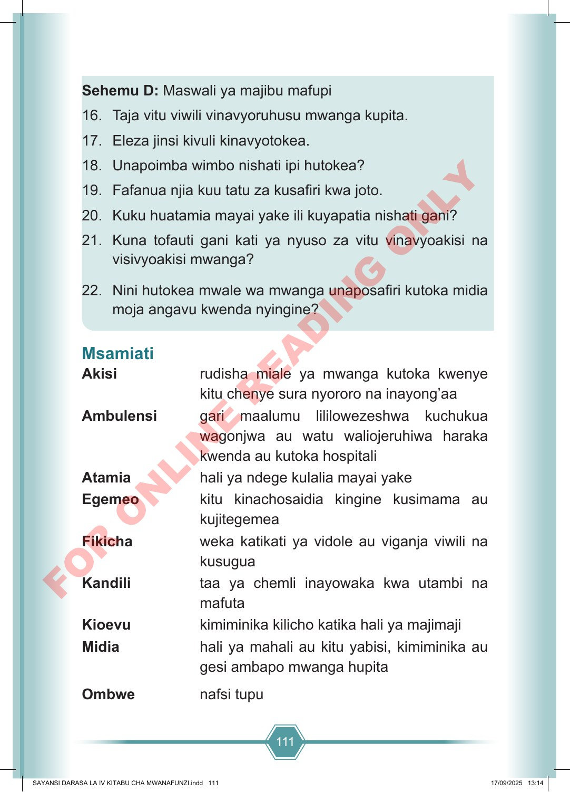

111 Sehemu D: Maswali ya majibu mafupi 16. Taja vitu viwili vinavyoruhusu mwanga kupita. 17. Eleza jinsi kivuli kinavyotokea. 18. Unapoimba wimbo nishati ipi hutokea? 19. Fafanua njia kuu tatu za kusafiri kwa joto. 20. Kuku huatamia mayai yake ili kuyapatia nishati gani? 21. Kuna tofauti gani kati ya nyuso za vitu vinavyoakisi na visivyoakisi mwanga? 22. Nini hutokea mwale wa mwanga unaposafiri kutoka midia moja angavu kwenda nyingine? Msamiati Akisi rudisha miale ya mwanga kutoka kwenye kitu chenye sura nyororo na inayong’aa Ambulensi gari maalumu lililowezeshwa kuchukua wagonjwa au watu waliojeruhiwa haraka kwenda au kutoka hospitali Atamia hali ya ndege kulalia mayai yake Egemeo kitu kinachosaidia kingine kusimama au kujitegemea Fikicha weka katikati ya vidole au viganja viwili na kusugua Kandili taa ya chemli inayowaka kwa utambi na mafuta Kioevu kimiminika kilicho katika hali ya majimaji Midia hali ya mahali au kitu yabisi, kimiminika au gesi ambapo mwanga hupita Ombwe nafsi tupu SAYANSI DARASA LA IV KITABU CHA MWANAFUNZI.indd 111 SAYANSI DARASA LA IV KITABU CHA MWANAFUNZI.indd 111 17/09/2025 13:14 17/09/2025 13:14 F O R O N L I N E R E A D I N G O N L Y